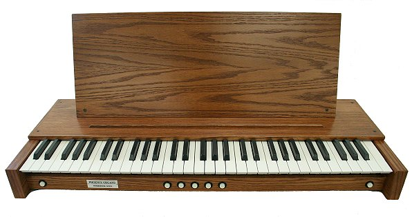
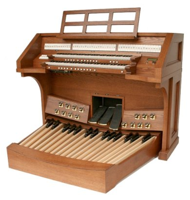

Redeemer Lutheran in Fairhope, AL - New PT238
Redeemer
Lutheran Church of Fairhope, AL will be getting a customized
Phoenix PT238 which should be installed before Christmas 2011.
There are several items included with the organ which were
specifically requested by the organist. Also, a speceially
prepared laptop computer will be installe with the organ which will
serve as a midi sequncer and more, to expand the features of this organ.
Phoenix II Organs are here!

For a home practice organ, or maybe even a small chapel, this may be
the choice for the budget minded customer looking for top-notch pipe
sound. Same great Phoenix Organ samples in this PC-based organ. For
more information and prices, please contact us through our contact page.
New Phoenix II instruments:
1) New Phoenix II TS-188 Keyboard More details here...
2) See the new Phoenix II Organ!
3) See the new Phoenix II PMK MIDI Keyboard!
SIGN UP HERE FOR OUR E-MAIL NEWSLETTER
============================================
New Phoenix Organ Features:
There have been several significant system
upgrades on all Phoenix Organs. This is in addition to the doubling of sound card memory last Fall. Existing Phoenix Organs can be easily upgraded with these improvements.
CAPTURE MEMORIES
Now, you will have 16 Memories on each of the 4 organ
specifications. You could say we have 64 memories, which is
4-times as much as before! What it means is that you can set different
combination memories for each independent organ Specification. Prior to
this, the combination settings were shared a by all
Specifications. This is a huge increase in combination memory and
is especially good for period specific (German Baroque / French
Romantic) registrations.
TEMPERAMENTS
You can set a different default temperament for each Specification. For
Baroque, it sounds more tracker-like to use Werckmeister. Silbermann
may not be as appropriate. For French, you may also like the
Werckmeister. Before, if you changed the temperament, it changed on
every Specification.
VIRTUAL ACOUSTIC REVERB SETTINGS
You can now have a different virtual-acoustic reverb default for each
Specification. This is especially effective in smaller venues. For
French you would want a long reverb time, whereas Baroque may sound
better with a more intimate reverb. Of course, if the church has a good
acoustic to begin with, reverb settings won't really matter. This
is however, a very nice feature for practice in a home or church
instrument.
VOLUME
You can have a different default volume default for each specification.
Evolution of the Phantom Player
Phoenix has re-designed the Phantom Player Midi Sequencer casing and it
now has a heavy injection-molded protective case with the Touch Screen
faceplate attached. It will now be in a slide out drawer under
the keybed on tab stop control organs. For drawknob organs, you can
still have the Touch Screen faceplate mounted on the coupler tab rail.
============================================================
Phoenix Organs...
designed to be the best...
determined to be the best.
|
New Phoenix II Organ PMK61

The new PII PMK 61 (Phoenix MIDI Keyboard - 61 notes) is the latest in the new group of Phoenix II instruments. This keyboard is a modular MIDI controller
which can be used alone with you laptop, desk top computer and your
choice of sound producing software such as JOrgan, GrandOrgue, etc. See
more information [CLICK HERE]
Join Us On FaceBook:
Updated & Expanded Sheet Music Pages
Huge selection of Organ Music, Piano Music,
and Organ w/ instruments selections and collections pre-sorted for your
easy selection. Over 800 selections... and growing... See more....
"Vintage" Music
A collection of "previously loved"
sheet music that still has many miles left in them. Many of these
books have long been out of print. See more here...
========================================

This low-profile 2-manual, 46-stop console is very reminiscent of
French-style consoles and lends itself to situations where
line-of-sight over the console is important, and will also work well in
a chapel or home setting. This version of the Phoenix PT 246 organ has six discrete audio channels with AcoustiCube12 speakers and a
large pedal sub-woofer. Other configurations are available.
This console is comfortable to play, and has a very good "feel" of sitting at a pipe organ console. You can see
the organ maintains all AGO dimensions and is not a "diminutive
interpretation" of an organ console that is offered by some companies; Notice
the massive side-cheeks, 2-1/8' thick, and the solid keydesk 1-3/4" thick, and don't forget heavily-built pedalboard... it
even has attractive bolsters for the 15 toe-studs!
============================================
We
now have an expanded line of related products to offer
in association with Amazon.com! Everything from audio
CD's to Grand Pianos, and all at great Amazon prices.
You will also enjoy the protection of Amazon's
Guarantees. Take a look... [CLICK
HERE]
=============================================
St. Michaels Catholic Church
of Roswell,
GA has chosen the Phoenix PT335
for their church. The organ features an attractive,
well-built console in oak to match the existing oak in the
gallery space in which it will be placed. With 3
manuals and 45 ranks (35 speaking stops) in three
independent specification, this organ will offer a great
amount of flexibility and resources for the organist.
The organ will speak through six channels and from a
custom-designed central chamber being prepared by the
church. Having the organ speak from this high,
central-axis position and the wonderful acoustics in this
beautiful space will make for a good blending of sound for
the organ and good accompaniment for the choir and
congregation.
=============================================
Organ Sheet Music
SheetMusicPlus
Serving
the Southeastern United States
(The
entire contents of this website, including any prices,
special offers, specifications, or any other contents is
specifically for customers in our sales area, and are
subject to change without notice.)
|